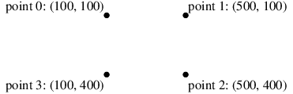
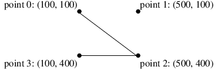
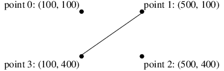
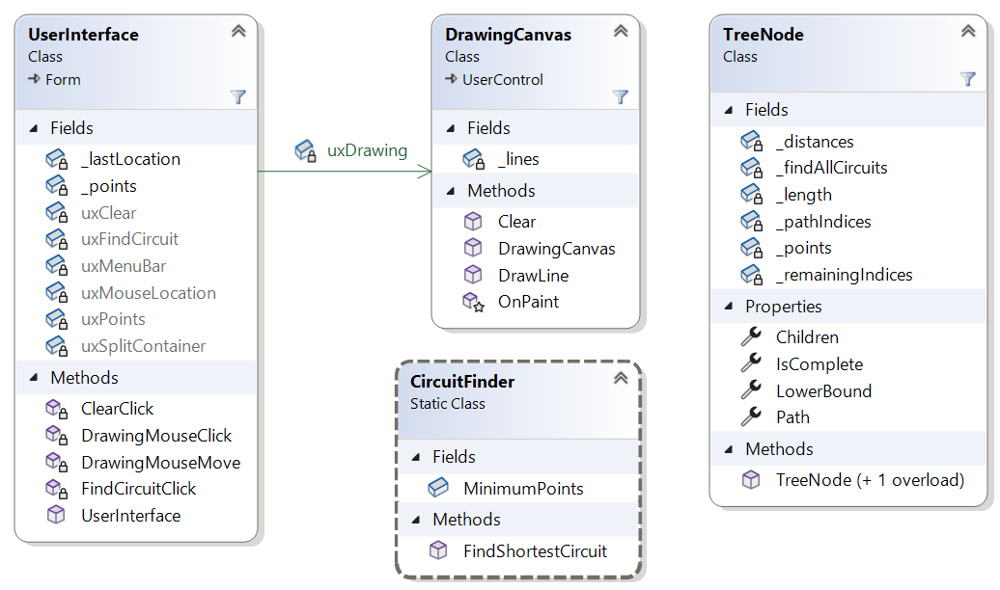

For this assignment, you will improve the performance of the model solution for Homework 3.
Homework Assignment 5: Traveling Salesperson Problem Revisited0. Table of Contents1. User Requirements2. Starting the Assignment3. User Interface4. Improvements to the Shortest Circuit Algorithm4.1. A Better Lower Bound4.2. Branch and Bound5. Software Architecture6. Coding Requirements6.1. The TreeNode Class6.1.1. private fields6.1.2. A public LowerBound property6.1.3. A public constructor6.1.4. A private constructor6.1.5. A public IsComplete property6.1.6. A public Path property6.1.7. A public Children property6.2. The CircuitFinder Class7. Testing and Performance8. Submitting Your Assignment
The company using the program you wrote for Homework 3 now needs to use it for somewhat larger sets of points - perhaps as many as 18. The performance of your earlier solution is unacceptable for data sets this large. They would like for you to improve the performance so that it handles such data sets quickly. Otherwise, the user requirements are unchanged.
Create a GitHub repository using the link provided on the Canvas assignment, and clone it to your local machine. The repository contains the model solution to Homework 3 with the Ksu.Cis300.PriorityQueueLibrary project from the model solution to Lab Assignment 25 added. In addition, some tests have been added to the unit test code in CircuitFinderTests.cs, and a new unit test file, TreeNodeTests.cs, has been added to the Ksu.Cis300.TravelingSalesperson.Tests project.
The program should look and behave exactly like the model solution to Homework 3, except that it should typically take less time for larger sets of points.
In this section, we will discuss two improvements that you will make to the algorithm.
The solution to Homework 3 prunes paths in the state space tree if it determines that the path can't lead to a shortest circuit. To do this, it relied on computing a lower bound on any circuit that begins with the path followed so far. This lower bound was fairly straightforward - the length of the path followed so far plus the distance from its endpoint directly back to its starting point. Thus, it uses no information about the remaining points to be included in the circuit. If we can use these points to obtain a better lower bound, we can potentially prune more paths from the state space tree.
Consider, for example, the following four points:

The distances between pairs of these points are shown in the following table:
For example, the distance from point 0 to point 2 is 500, shown in row 0, column 2, of the above table. Suppose the algorithm has already found the circuit <3, 2, 1, 0>, which turns out to be the shortest circuit, with a length of 1400. Suppose it next tries the path <3, 2, 0>, which has a length of 900, as shown in the following figure:

The distance back to point 3 is 300; hence, the lower bound is 1200 < 1400. We therefore continue on to point 1, completing a circuit of length 1800, which is too long.
Suppose that instead of simply using the path length plus the distance from point 0 back to point 3 as our lower bound, we instead use the path length plus some measure that incorporates both point 1 and point 3. Any shortest circuit must reach both of these points after following the current path. Furthermore the path to either of these points must come from either point 0 (the end of the current path) or point 1 (the only remaining point). Thus, we could reason that in order to get to point 1, we must follow a path of length 400 (we can't go from point 1 to point 1), and in order to get to point 3, we must follow a path of at least 300 (the minimum of the distances from points 0 and 1). Therefore, any circuit starting with <3, 2, 0> must have length at least 900 + 400 + 300 = 1600 > 1400. Using this lower bound, we can prune this path at this point.
To summarize this lower bound calculation, let:
We then define the lower bound to be:
Note that if R is empty (i.e., if there are no remaining points), the summation has only one element, where b = u (the start of the path). Furthermore, the set within this element also contains only one element, v (the end of the path). Thus, in this case, the lower bound is p + d(v, u), which is the length of the complete circuit.
Continuing with the above example, suppose our current path is simply <3, 1>, whose length is 500:

For the lower bound calculation, we need to consider points 0, 2, and 3 for the sum. For each of these, we need to find the minimum distance from points 0, 1, and 2. The lower bound is therefore the sum of:
The sum is 1500 > 1400, so we can prune this path as well. Note that the original lower bound would have been 500 + 500 = 1000 < 1400, and pruning would not have been possible.
While the above lower bound results in better pruning of the search, a better search algorithm leverages this lower bound even more effectively. This algorithm is known as branch and bound. Rather than searching the state space tree recursively, branch and bound instead maintains a collection of nodes of the tree, focusing on the node with the smallest lower bound - the node that appears to be the most promising. Specifically, the algorithm starts with the root node as its current node and an empty min-priority queue of nodes. Then as long as the current node is not a complete circuit, it does the following:
When the loop terminates, the current node will contain a complete circuit, and its lower bound will be the length of this circuit. Furthermore, because all of the nodes remaining in the queue have lower bounds at least as large as the length of this circuit, this circuit will be the shortest.
The following class diagram shows the architecture of the program:

The UserInterface and DrawingCanvas classes are the same as for Homework 3. The TreeNode class implements a single immutable node of the state space tree. The CircuitFinder class is used for the same purpose as for Homework 3; however, the FindShortestCircuit method will implement the branch and bound algorithm, and much of the logic from the FinishShortestCircuit method will be moved to the TreeNode class.
In what follows, we give specific coding requirements for the TreeNode and CircuitFinder classes. The names of most of your fields, properties, and methods don't need to match those shown in the diagram, as long as they follow the style requirements. In order for the unit test code to work, however, the public methods in the CircuitFinder and TreeNode classes must have the names shown in the diagram. In some cases, you are required to break the code into additional private methods that are not described. In deciding what code to put into other methods, consider how you can use additional methods to avoid duplicating code or to shorten what would otherwise be a long method.
While most of the coding requirements for the CircuitFinder class are described in Section 6.2. The CircuitFinder Class, we'll mention here that you will need to add to that class a public static readonly int field defining the minimum number of points (3) through which a circuit can be found. Use this constant in both the CircuitFinder class and the TreeNode class to avoid using the literal 3.
You will need to define six private readonly fields, four public properties, two constructors, and at least five private methods. The fields, properties, and constructors are defined in what follows. You will need to decide how to define the private methods.
You will need to include the following private readonly fields:
This property should be of type double. It should be implemented using the default implementation with a get accessor, but no set accessor.
This constructor should take as its only parameter a List<Point> giving the points through which a shortest circuit is to be found. It is responsible for constructing the root node of the tree. First, check that the given list is not null - if it is, throw an ArgumentNullException. Then if the list contains fewer than 3 points, throw an ArgumentException. If the parameters are OK, initialize all of the above fields and the above property using the given list. This node should represent the start of the search as it was initiated in the CircuitFinder.FindShortestCircuit method in Homework Assignment 3. You may be able to do part of this initialization by moving some of the given code from the CircuitFinder class to this class. Keep in mind that in Homework 3, the path and the remaining points were represented by List<Point>s, but for this assignment, you are using int[ ]s storing locations within a Point[ ]. Use the lower bound described in Section 4.1. A Better Lower Bound to initialize the LowerBound property.
This constructor should take the following parameters:
It is responsible for constructing a node other than the root of the tree. Initialize the fields and properties described above using the given parameters. Note that you can access the private fields of the given TreeNode within this constructor because the constructor is defined within the TreeNode class definition. Because TreeNodes are immutable and this constructor is private, it is safe to copy references into the fields - there should be no need to construct any new arrays. Use the lower bound described in Section 4.1. A Better Lower Bound to initialize the LowerBound property.
This property should be of type bool. It should get whether the path in this node represents a complete circuit. Do not use the default implementation; instead, have this property return the result of an expression that tells whether the path is a complete circuit.
This property should be of type Point[ ]. It should get the path represented within this node. Do not use the default implementation; instead, use a block of code to build the Point[ ] you need to return.
This property should be of type List<TreeNode>. It should get a list of the children of this node. Do not use the default implementation; instead, use a block of code to build the list you need to return. If this node stores a complete circuit, the list returned should be empty. Otherwise, follow the same logic as the code to set up the recursive calls within the CircuitFinder.FinishShortestCircuit for Homework 3 - each child corresponds to a recursive call. Note that you should not change the contents of any of the fields. Instead, build new arrays and use the private constructor to construct each node. Make use of an array's CopyTo method and/or the Array.Copy method as appropriate.
For this class, you won't need most of the code from Homework 3. Besides the constant described at the beginning of these coding requirements, all you will need is the FindShortestCircuit method. This method should first check that the given List<Point> is not null, and if it is, throw an ArgumentNullException. Then check that the list has at least 3 points - if not, throw an ArgumentException. Then it should find the shortest circuit through the given points using the branch and bound algorithm described in Section 4.2. Branch and Bound. Use a MinPriorityQueue<double, TreeNode> for the min-priority queue.
Unit tests have been provided to test your TreeNode and CircuitFinder classes. You should first focus on the tests of the TreeNode class. Within the tests for each class, work through the traits alphabetically.
For the TreeNode class, most of the tests are done using the TestChildren method. This method is given the following parameters:
It then checks that the Children property of the given parent node gives the correct number of children, each of whose properties (except the Children property) give the correct values.
The actual test methods within TreeNodeTests set up the calls to the TestChildren method using the GetList method, which takes an int parameter n and produces a List<Point> containing the first n points from the array _points. Some of the tests use the GetChild method to extract from a List<TreeNode> a node whose path ends in a given point. This is useful for getting a specific child of a node.
Most of the tests of the CirucuitFinder class are done by the TestGetShortestCircuit method. It is passed an index into three arrays:
_testCasePoints, whose elements are Point[ ]s giving the points used in the test._testCaseLengths, whose elements are doubles giving the expected shortest path length for the test._testCaseResults, whose elements are Point[ ]s giving the expected sequence of points to be returned through the second parameter to GetShortestCircuit.Thus, for example, the test ShortTest(1) uses a list containing the points in _testCasePoints[1] as the first parameter to GetShortestCircuit. It then verifies that the length returned is within 0.000001 of 1600 (the value in _testCaseLengths[1]) and that the out parameter contains the sequence of points in _testCaseResults[1].
Running the long tests will take longer than running the short tests, and may run as long as the timeout of 20 seconds if your code isn't correct. Use the timing information from the long tests to check the performance of your code. All three tests should finish before timing out, but LongTest(5) should take much longer than the other two, as it is a particularly bad case for the branch and bound algorithm. Note that LongTest(8) uses 17 points. The long tests take approximately the following amount of time on my PC:
Besides running the unit tests, you will also need to test the GUI to ensure that it still behaves correctly. If the unit tests pass, you can be reasonably sure that the circuits it finds have the shortest length, but make sure it is displaying them correctly.
Be sure to commit all your changes, then push your commits to your GitHub repository. Then submit the entire URL of the commit that you want graded.
Note: GitHub will not run the unit tests when you push your code. As for previous homework assignments, it is set up to use GitHub's autograding feature to track push times. No actual testing/grading is done, but after each push, the GitHub page for the repository will show a green check mark on the line indicating the latest commit, regardless of whether your program works or your unit tests pass. The only purpose for using the autograding feature in this way is to give us a backup indication of your push times in case you submitted your assignment incorrectly.